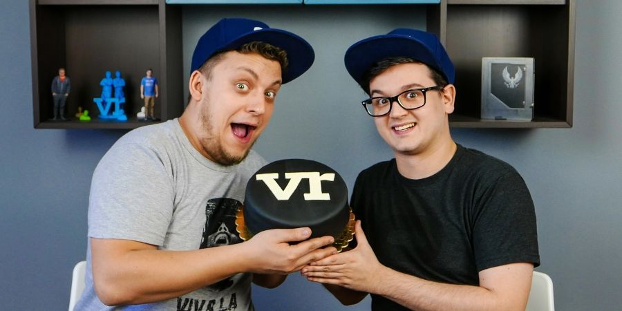
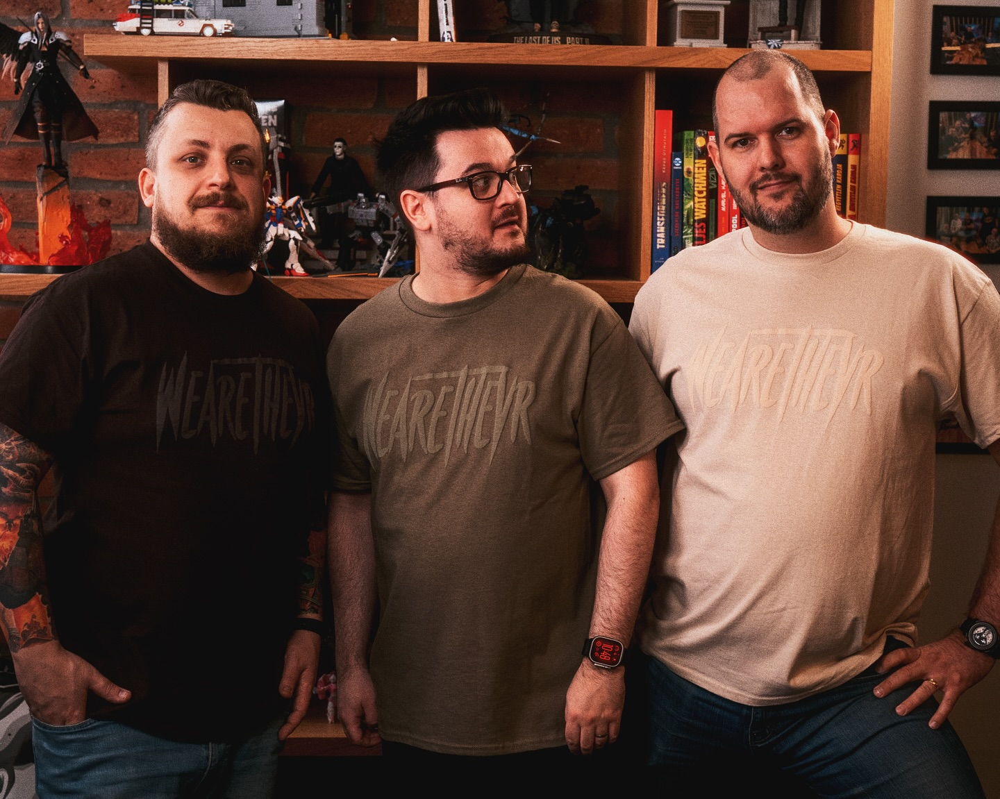
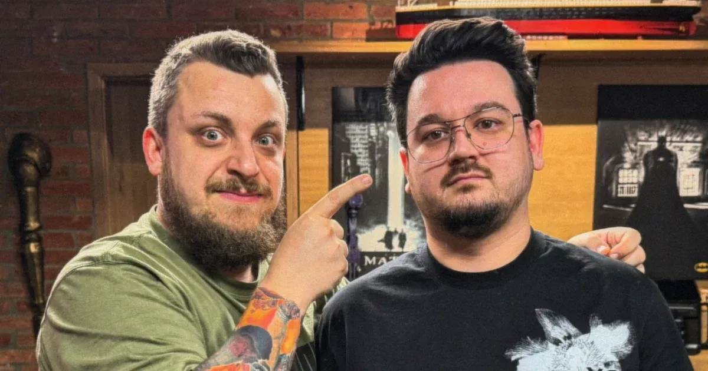

A kezdetek
2013 októberében indította el az első csatornáját, a TheVR-t, aminek a
tematikája az évek során folyamatosan változott. Kezdetben a virtuális
valóságra és VR játékokra koncentrált, majd indie játékokkal játszott.
Mára már az egész gamer világot lefedi. Ezen felül a nézőinek és
támogatóinak hála rengeteg helyen járt a világban. Az utazásokat
minden esetben rögzítette, és VLOG formájában bárki vissza tudja őket
nézni. Az évek során olyan eseményeken volt jelen, mint az E3,
Gamescom, TwitchCon, CES, IFA. Jelenleg több mint 1000 videó található
ezen a csatornán, és több mint 800.000 ember követi. Az ország egyik
legnépszerűbb YouTube csatornája.

Tech csatorna
2014 júliusában hozta létre a második csatornáját, amely központjában
a legújabb technológiák, hardverek és érdekes technológiai megoldások
állnak. Ezek tesztelése és részletes bemutatása a TheVR Tech fő
profilja. 2021-ben teljesen újragondolta a csatorna alapkoncepcióját,
és a hétköznapi életet érintő, illetve az ő érdeklődési körét jobban
érintő tech termékek is teret kapnak a csatornán. A TheVR Tech
Magyarország egyik legnézettebb és legnépszerűbb technológiai
csatornája.

Twitch
2016 októberében rájöttek, hogy egy következő szintre kell lépnie, és
ki kell szakadnia a szokásos YouTube formátumból, ami elsősorban a
gaming tartalmait érintette. Később elindították a legrégebb óta futó
állandó reggeli műsorát, a Happy Hour-t.
